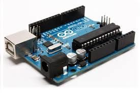

Pour commander notre véhicule, nous avons utilisé une carte programmable afin de capter des signaux infrarouges, de les interpréter puis d'activer nos moteurs en fonction des signaux reçus.

Carte programmable Arduino UNO
Une carte programmable est un "mini ordinateur", elle est composée :
D'un microcontrôleur, c'est un composant qui va gérer à la fois la mémoire et le traitement des informations (principe de l'ordinateur sauf que l'on a plusieurs composants pour ces tâches).
D'un port USB lui servant à se recharger, transmettre et recevoir des informations avec l'ordinateur.
D'un connecteur lui servant uniquement à se recharger.
De multiples pins électriques (binaires ou analogiques) permettants de communiquer avec les composants branchés à la carte via des différenciels de tension électrique et d'autres pins pour transmettre du courant et autres fonctionalités.
D'autres composants servant au bon fonctionnement de la carte (condensateurs, résistances, LEDs, etc...)
À quoi ça sert ?
L'utilité d'une carte programmable est de pouvoir interagir avec les composants connectés à celle-ci. Elle va servir de "cerveau" pour tout son environnement. Pour contrôler "l'environement" de la carte, on va coder des instruction (avec le langage de programmation "C") qui vont être executées ensuite par la carte. On écrit et injecte le code à l'aide d'un logiciel sur ordinateur (dans notre cas c'est le logiciel fournit par Arduino).
Les possibilités sont ensuite infinies, les seules limites avec ce type de matériel sont l'imagination et les conaissances, il existe des centaines de modules compatibles avec différents type de cartes.
Les cartes programmables sont quasiment utilisées dans tous projets de robotique et domotique amateurs ou parfois proffessionels, c'est idéal pour le prototypage et le test, voici quelques exemples de projets réalisés grâce à des cartes programmables :
Un Panneau solaire intelligent pour avoir toujours le maximum d'energie, pratique pour les champs de panneaux solaires.
Pour contrôler notre modèle, nous avons choisi d'utiliser une télécommande infrarouge, et par conscéquent un récepteur infrarouge qui va interpréter les signaux infrarouges de la télécommande pour les retransmettre à la carte programmable qui va utiliser ces informations.
Schéma du spectre lumineux
L'infrarouge est un domaine d'ondes électromagnétiques, qui comprend les ondes avec une longueur située entre 800nm et 106nm. Notre récepteur infrarouge quant à lui capte des ondes avec une longueur aux alentours de 940nm (proche infrarouge).
On utilise l'infrarouge car ces ondes sont invisible à l'oeil nu (d'ailleurs on peut voir ces ondes infrarouges avec certains appareils photo). On envoie donc des séquences de flashs lumineux sans que ça ne dérange personne, si l'on avait utilisé une onde lumineuse dans le domaine du visible, on aurait parfois des centaines de flashs sortant de nos télécommandes (l'information envoyée étant codée en signaux lumineux).
On utilise d'ailleurs l'infrarouge tous les jours, les télécommandes de télévision ou autres marchent à l'infrarouge (petite LED située au bout des télécommandes)